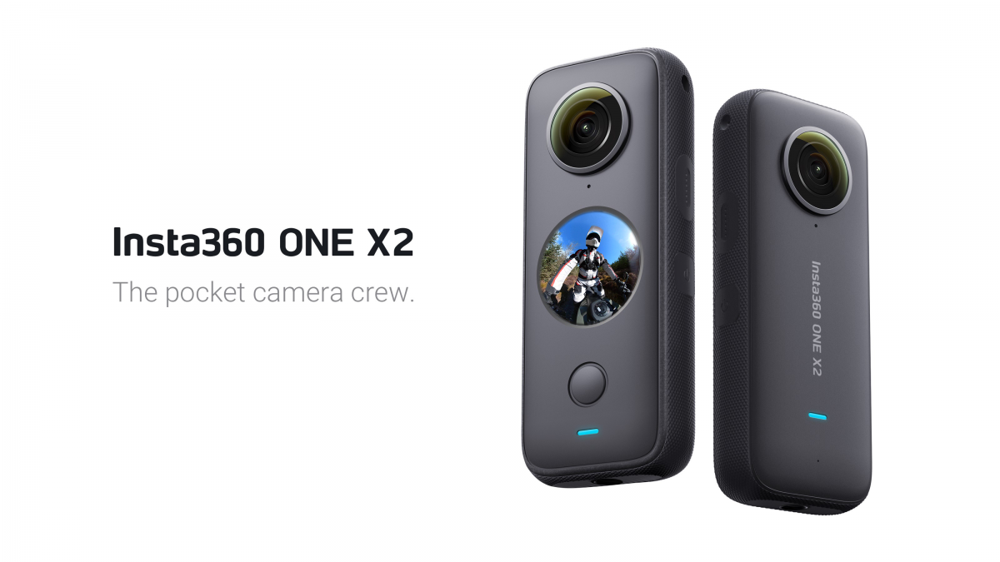

Insta360's action camera lineup includes ONE, ONE X, ONE R, ONE RS, ONE X2, X3, and the Insta360 GO with its successor the GO 2. The brand's action cameras use 360 technology to create traditional flat video results by "reframing" the 360 video, allowing the editor to pick their angle in post-production.[11] They also all share Insta360's proprietary "FlowState Stabilization" image stabilization technolog
